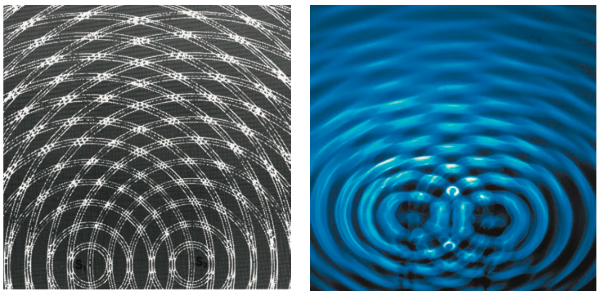
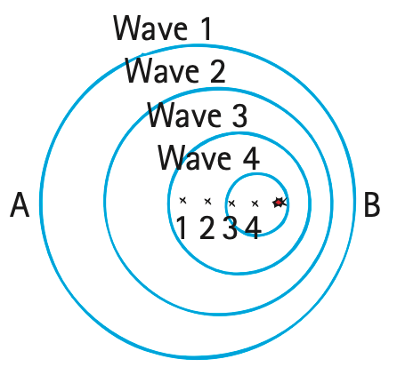

Wave Interactions
Mathematical idea: Wave interaction is modeled by adding displacements and comparing wavefront spacing rather than by changing the wave-speed formula.
You will use textbook superposition, standing-wave, and Doppler diagrams as evidence for what changes when waves meet, reflect, or come from a moving source.
Learning Target
Students will explain how waves interact through interference, standing waves, and the Doppler effect.
I can statements
- I can explain constructive and destructive interference.
- I can interpret simple wave-superposition diagrams.
- I can describe how standing waves form.
- I can explain the Doppler effect as a change in observed frequency caused by relative motion.
- I can connect wave interactions to everyday examples such as sirens, stadium waves, slinkies, and strings.
Vocabulary
These are words you will see in this section. Do not define them yet.
- interference
- superposition principle
- constructive interference
- destructive interference
- phase
- standing wave
- node
- antinode
- Doppler effect
- observed frequency
Use the preview activity to decide which words you already know, recognize, or do not know yet. Watch for these words in bold when they are first introduced or defined in the reading.
Preview: Skim Before You Read
Directions
Before reading closely, skim the vocabulary list and the section. Look at titles, headings, bold words, pictures, captions, diagrams, tables, and formulas. Do not try to understand everything yet. Your job is to notice what already looks familiar and make predictions about what this section may explain.
Step 1 — Sort the vocabulary. Write each vocabulary word in the column that best matches what you know right now. You may move a word later.
| Know for sure | Recognize | Don’t know yet |
|---|---|---|
Step 2 — Skim the section. Record what catches your attention before you read closely.
| What I noticed | |
|---|---|
| What I predict | |
| What I wonder |
Content: Read, Look, Annotate, Apply
Directions
Read in short chunks. Annotate the prose and the figures together: underline evidence, circle or highlight bold vocabulary, label arrows or measured features, connect a sentence to an image, and write short questions or connections in the margins.
Reading 1: When Waves Share the Same Space
Unlike solid objects, waves can occupy the same region at the same time. When waves overlap, the result is interference. The superposition principle says that the displacements caused by the waves add at every point while they overlap.
If two crests meet, or two troughs meet, their effects reinforce. This is constructive interference. If a crest meets a trough, the displacements oppose one another and produce destructive interference. The waves are described as having the same or different phase depending on how their cycles line up.

Image read: In the top pair, compare the signs of the two displacements. In the bottom pair, mark where positive and negative displacements cancel.

Image read: Locate regions where the two water-wave patterns reinforce and regions where they reduce one another. Explain why a repeating pattern appears.
Interference does not mean the original waves permanently disappear. While they overlap, their displacements combine. After passing through one another, each wave continues.
Stop and Discuss
- Use Figure 19.10 to explain why one overlap increases amplitude while another reduces it.
- What does the water-wave interference pattern show that a single wave source would not produce?
Example 1: Add the Displacements
At one point, Wave A displaces the medium +3 cm and Wave B displaces it +2 cm.
- Determine the combined displacement.
- Name the type of interference and justify it.
You Try It 1: Opposite Displacements
At one point, one pulse produces +4 cm displacement while another produces -4 cm.
- Determine the resulting displacement while they overlap.
- Explain whether the waves themselves are permanently destroyed.
Reading 2: Standing Waves from Reflection and Interference
When a wave on a rope reaches a rigid boundary, it can reflect and travel back through the incoming wave. If the incident and reflected waves have the right relationship, they form a standing wave—a stable pattern that appears not to travel along the rope.
A node is a location with minimal or zero displacement. An antinode is midway between neighboring nodes and has the greatest displacement. These regions arise because the two opposite-traveling waves repeatedly interfere in the same way at the same locations.

Image read: Follow the incident and reflected waves through the sequence. Mark the place that remains a node even as the individual wave shapes change.

Image read: Count the segments and nodes in each pattern. Compare what happens to wavelength as the number of segments increases on the same rope length.
Standing waves are important in strings and air columns of musical instruments. The allowed patterns depend on the length of the vibrating system and on the frequency used to drive it.
Stop and Discuss
- Why can a node remain still even though two waves are continually passing through that location?
- Compare the one-segment and three-segment patterns. What changes about wavelength as more segments fit on the same rope?
Example 2: Find the Node
A standing wave on a rope has a point that never moves while nearby points oscillate strongly.
- Identify the still point.
- Explain its low displacement using interference.
You Try It 2: More Segments
A rope shows two equal standing-wave segments. The driving frequency is increased until four segments fit on the same rope.
- Describe how the wavelength changed.
- Identify where antinodes are located relative to nodes.
Reading 3: Doppler Effect: Arrival Rate Changes with Motion
A stationary source that vibrates steadily sends evenly spaced wavefronts in every direction. Observers around it receive the same arrival rate when the wave speed is the same in all directions.

Image read: Compare the wavefront spacing toward points A and B. Explain why both observers receive crests at the same rate.
When the source moves, the wavefronts bunch closer together in front and spread farther apart behind. This change in arrival rate is the Doppler effect. The observed frequency is higher where crests arrive more often and lower where they arrive less often.

Image read: Mark the side with shorter wavelength and the side with longer wavelength. Predict which observer measures higher frequency.

Image read: Connect the close wavefronts to higher pitch and the spread wavefronts to lower pitch. Do not label either side as a different wave speed.
The source does not need to change its own vibration rate for the listener to hear a change. In the same medium, the wave speed can remain the same while wavelength and observed frequency differ because of relative motion.
Stop and Discuss
- Use the moving-bug image to explain why the observer ahead receives a higher frequency.
- A student says the sound travels faster in front of an ambulance. What evidence in the Doppler model corrects that claim?
Example 3: Approaching Siren
An ambulance approaches a stationary listener at constant speed.
- Compare the wavefront spacing in front of the ambulance with the spacing behind it.
- Predict the listener’s observed frequency and pitch compared with the source at rest.
You Try It 3: After the Pass
The same ambulance has passed the listener and is moving away.
- Predict the observed frequency and pitch.
- Explain what changes and what does not change about the wave in the same air.
Vocabulary: Define the Terms
You have now seen these words in the reading, images, and practice. Use this table to consolidate the physics meaning of each term.
| Vocabulary term | Definition |
|---|---|
| interference | The result of two or more waves overlapping in the same region. |
| superposition principle | The rule that overlapping wave displacements add at each point. |
| constructive interference | Interference that increases amplitude because wave effects reinforce. |
| destructive interference | Interference that decreases amplitude because wave effects oppose. |
| phase | The relative timing or position of cycles in two waves. |
| standing wave | A stable interference pattern produced by waves of the same frequency traveling in opposite directions. |
| node | A point or region of minimal or zero displacement in a standing wave. |
| antinode | A point or region of maximum displacement in a standing wave. |
| Doppler effect | A change in observed frequency caused by relative motion between a source and receiver. |
| observed frequency | The rate at which wave crests or compressions arrive at a receiver. |
Summary
- Interference occurs when waves overlap; the superposition principle adds their displacements.
- Constructive interference increases amplitude; destructive interference decreases it.
- Standing waves form from opposite-traveling waves and contain nodes of minimal displacement and antinodes of maximum displacement.
- The Doppler effect changes observed frequency when source and receiver have relative motion.
- In one medium, Doppler changes wavelength and observed frequency without requiring a change in wave speed.
Common Mistakes
| Mistake | Why it is tempting | Check instead |
|---|---|---|
| Interference permanently destroys the waves. | A cancellation picture can show zero displacement. | The zero is the temporary sum while waves overlap; the waves continue afterward. |
| A standing wave means no waves are moving. | The pattern looks stationary. | It is formed by waves traveling in opposite directions and interfering. |
| Nodes contain no waves. | The medium does not move there. | Two waves are present; their displacements cancel at the node. |
| Doppler means sound moves faster toward you. | Higher pitch can sound like “faster sound.” | In the same air, wave speed stays essentially the same; arrival frequency changes. |
State the difference between constructive and destructive interference.
A moving source produces wavefronts 0.8 m apart ahead and 1.2 m apart behind. Without calculating, identify which side has the higher observed frequency and explain why.
What is one thing you learned in this section? Explain it in at least one complete sentence.
What is one thing from this section you still need to understand or practice more? Be specific.